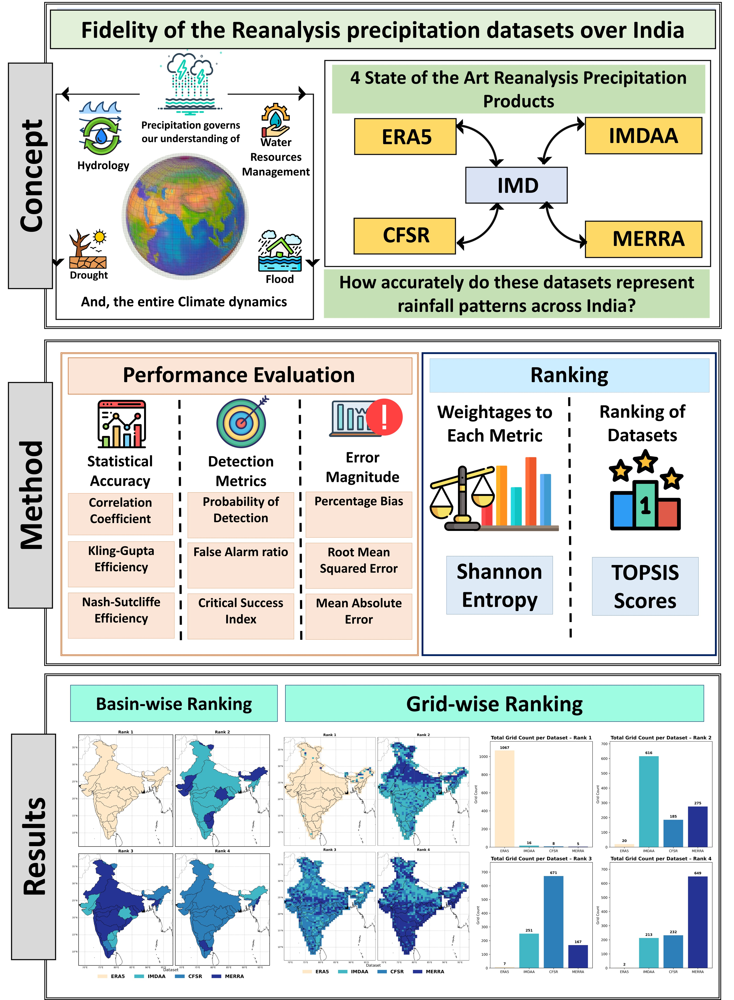

Featured Research
Int. J. Applied Earth Observation & Geoinformation · 2025
Which Reanalysis Product Can You Trust?
25 Indian Basins, 1990–2024
Explore the Study

Figure — Singh & Mohanty (2025), IJAEOG
25 basinsAll Central Water Commission river basins assessed
11 metricsRanked with a Shannon Entropy–TOPSIS framework
ERA5 nationallyIMDAA leads in monsoon and mountainous basins
Impact factor 9.83First-author, 2024 journal impact factor